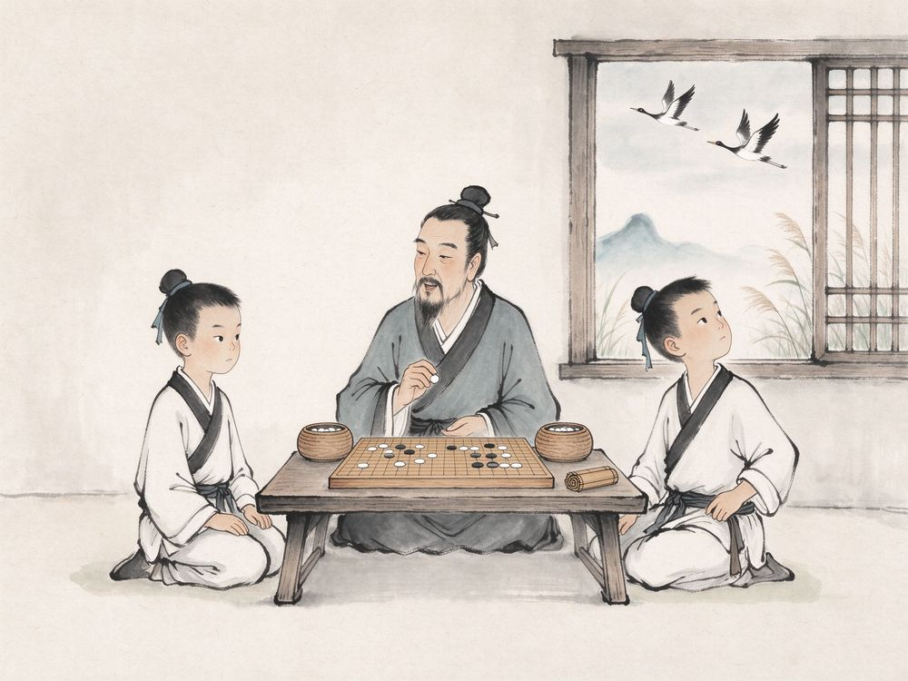

第 三 课
苟不教，性乃迁。
gǒu bù jiào xìng nǎi qiān
先 ↓ 右列 再 ← 左列
古法竖排：自右而左，自上而下。先读右列「苟不教」，再读左列「性乃迁」，每列从上往下。
苟是如果 · 教是上面做、下面学 · 迁是往下走，不是搬家
少儿共读读给孩子听
上一课说，天天泡在什么里头，就成什么颜色。这一课说更难的一件事：要是没人教，那点好底子，会自己跑掉。
这句话是反着说的。说不教，是为了说：得教。
古时候有个人叫弈秋，是全国下棋最好的人。他收了两个徒弟，一起教。
一个徒弟坐得直直的，眼睛盯着棋盘，弈秋说什么，他都听进去。另一个也坐在那儿，可心里想的是：天上要是有天鹅飞过来，我就拿弓把它射下来。眼睛在看棋盘，心已经飞到窗外去了。
两个人同一个老师、同一张桌子、同一段时间。学到最后，差得很远。是因为第二个笨吗？不是，是他的心思根本不在棋上。

同一个老师，同一张桌子；一个在听，一个在望天。
这样的事，你也许有过：上课上到一半，忽然想起放学要吃什么；绘本翻到第三页，眼睛还在，人已经走了。这不怪你，是心跑了。心一跑，教的话就落不进心里，等于没教。
还有一件事，孟子说得更直白。
天底下最容易长的东西，比如豆苗：晒它一天太阳，再冻它十天，没有能活的。
 浇一天，旱十天；再容易长的苗，也长不成。
浇一天，旱十天；再容易长的苗，也长不成。
学东西也是这样。练三天，停十天；读两页，搁半个月。每次重新开始，都像从冻僵的地方再发芽，长不起来。
所以这一课的话，一半给大人——你要教；一半给孩子——你要肯受。教的人肯教，学的人肯听，这两半合上，才叫“教”。
心 跑 了人 在 心 不 在
眼睛在看，心已经走了。老师讲的进不去，讲了也白讲。这一半，要靠自己把心拉回来。
断 断 续 续学 一 阵 停 很 久
刚冒头又冻回去，每次都从零开始。宁可每天十分钟，不要一天两小时、然后停半个月。
成 长 小 启 示
- 上课时心跑了，就轻轻拉回来。不用骂自己，拉回来就好。
- 一次只做一件事：写字就写字，玩就玩。
- 学一样东西，宁可每天十分钟，不要一天两小时、然后停半个月。
- 断了不要紧，接上就行。断了不接，才叫“迁”。
给 爸 爸 妈 妈 的 一 句 话 · 教 而 不 继 三 件 事
这一课最容易被讲成“你要好好学”，孩子听了只会关耳朵。换三个动作试试。
一、固定十分钟。每天同一时间、同一张桌子、做同一件事。短，但不能断——这比周末补两小时有用。
二、让他回讲一遍。教完别问“懂了吗”，让他用自己的话讲给你听；讲不出来，就是心当时跑了。
三、断了就接，别罚。停了一周，不要说“你看你又不坚持”，只说“今天我们接上”。断不是罪，断而不接才是。
— 6 —
成人研学 · 古今汇观第三课 · 深度页
苟不教，性乃迁
假设句的反证 · 弈秋与一暴十寒皆出《告子上》 · 端与成 · 教的双向
一 · 字义与句读
“苟”作“若、假使”解，句首假设连词，无实义。“教”，《说文》训“上所施，下所效也”——上施下效，故“教”天然含“示范”一义，非仅言说。“迁”，《说文·辵部》训“登也”，本义为移而上；段玉裁谓引申为移易。此处承“善”而言，方向实为下移，是字义的反用。全句可转写为：
倘若不加教化，那起初相近的善端，便会移易下坠。
句法是反证
：不直说“当教”，先说“不教则如何”，把结论留给听者自己得出。同书“子不学，非所宜”“幼不学，老何为”，皆同此式。
二 · 出处与语境
“弈秋”与“一暴十寒”两喻，俱出《孟子·告子上》。原文语境并非论教化，而是论专心与熟仁：“一日暴之，十日寒之，未有能生者也”之后紧接“吾见亦罕矣，吾退而寒之者至矣”——孟子说的是自己与君王相见日少、被小人“寒之”日多的处境。三字经取此二喻论文教，是借用而非原义，须点明。
同篇尚有“五谷者，种之美者也；苟为不熟，不如荑稗。夫仁亦在乎熟之而已矣”——此句才是本课真正的理论支点：善端如种，熟则成谷，不熟则不如稗草。
三 · 中西对照
洛克《教育漫话》：心如白纸，教化书写其上；德性与习惯靠反复练习养成，非天生自带。与“苟不教”同向。
康德：人是唯一需要教育的动物。教育把人从“自然人”引向“道德人”；不教，则只有驯顺与野性，无自由的人格。
维果茨基：最近发展区与脚手架。教不是灌，是在孩子够得着的地方托一把；无托则够不着，有托则向上。
卢梭（反向）：过早、过密的教化会扭曲自然。若采此说，“苟不教”之“教”须限定为顺性之教，否则教本身即是“迁”的另一个原因。
反例：伤仲永（王安石）：五岁能诗，父挈之环谒于邑人，不使学；十二三岁，诗已不能称前时之闻；又七年，泯然众人。这是“天资不教则迁”的极端案例，与“性相近”构成强度上的对照：相近的性，也可被不教拉到极远处。
四 · 与前两课的张力
第一课言性本善，第三课言不教则迁。若性本善，何须教？这是全课最要紧的一问，须正面作答：
善是端，不是成。
孟子自己说得很清楚：“人皆可以为尧舜”，又说“五谷不熟，不如荑稗”。端在，只是“可以为”；成不成，看熟不熟。故“性本善”是起点判断，“苟不教，性乃迁”是过程判断，二者不矛盾，反倒是同一件事的两半：正因为端可成可萎，教化才有意义。
与第二课的接口：第二课说“习相远”，讲分化；第三课说“苟不教”，讲下坠。分化是中性的，可上可下；不教之迁，是有方向的。
另须补一层：教是双向的。“上所施，下所效”——有施有效才成教。弈秋二徒同师、同席、同时，而成效迥异，可见“教”不只在施者，也在受者。此义若不点出，本句极易沦为单方面的责难。
存 疑 · 留 待 深 究
一、“教”的边界在哪里？教化与规训只隔一层：前者养其自主，后者塑其顺从。此句未加限定，容易滑向“不听话就是没教好”。
二、“迁”可逆否？滑下去的人能否回来？若不可逆，“教”当及早；若可逆，“教”当不弃。这决定教育的时间观，也决定我们对“晚成者”的态度。
三、若善端需养方能成，“性善”究竟是事实描述，还是价值召唤？孟子把它说成事实，康德把它说成应然。这一分歧，可能是全课最难合的一处。
— 7 —